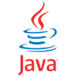
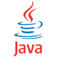
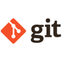
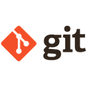

Bem Vindo ao meu Portfólio!
Olá e bem-vindo ao meu portfólio! Meu nome é Leandro, sou estudante de Engenharia de Computação e tenho como paixão a tecnologia. Aqui, você encontrará uma coleção dos meus projetos, experiências e realizações na área de TI. Espero que você aproveite a visita e, se tiver qualquer dúvida ou quiser saber mais sobre meu trabalho, não hesite em entrar em contato. Obrigado pela visita e aproveite!


 


 


MUITO PRAZER, SOU LEANDRO GASPAR.
Sou um estudante de Engenharia de Computação com uma grande paixão pela area de tecnologia. Atualmente, estou em busca de um estágio que me permita aplicar e expandir os conhecimentos adquiridos ao longo da minha formação acadêmica e experiências anteriores. Estou em constante aprendizado, sempre buscando novos conhecimentos e aprendendo sobre novas ferramentas de tecnologia.
Minha Jornada
Minha experiência profissional começou na área de atendimento ao cliente, onde liderar equipes de recepção me proporcionou habilidades valiosas, como:
- Gestão de Pessoas: Liderança e coordenação de equipes.
- Planejamento Estratégico: Organização e implementação de processos eficientes.
- Comunicação Eficaz: Habilidade em transmitir informações de maneira clara e assertiva.
- Resolução de Problemas: Colaboração com equipes de TI para solucionar problemas relacionados a softwares e ferramentas.
Essas experiências fortaleceram meu interesse por tecnologia e me motivaram a aprofundar meus conhecimentos em Programação. Também realizei projetos acadêmicos, trabalhando em grupo utilizando metodologias ágeis e Design Thinking para resolução de problemas da comunidade em geral, como a criação de uma aplicação web para salão de beleza.
Habilidades Técnicas
Possuo conhecimentos intermediários e básicos em várias áreas de TI, incluindo:
- Lógica de Programação
- Desenvolvimento Front-End: HTML, CSS e JavaScript
- Linguagens de Programação: Java, SQL e Python
- Banco de Dados Relacional: MySQL e SQL Server Management Studio
- Modelagem de Dados: Criação de diagramas e estruturação de dados
- Estruturas de Dados: Conhecimentos básicos em C++
- Versionamento de Código: GIT e GITHUB
Objetivos
Meu objetivo é encontrar uma oportunidade de estágio onde eu possa aplicar minhas habilidades, aprender novas tecnologias e contribuir para projetos inovadores. Estou entusiasmado com a possibilidade de colaborar com profissionais experientes e crescer na área de TI.
MEUS CONHECIMENTOS
Programação Java
Lógica de Programação, Demonstração e uso dos mecanismos de compilação e execução de programas, conhecimento em serialização para uso na persistência de Objetos, capacidade de criar operações em Banco de Dados Relacional através da utilização de Drivers JDBC, Vínculo de conexões à Banco de Dados em componentes de interface SWING,Orientação a Objetos, Interface de Programação - API.
HTML, CSS e JavaScript
Capacidade de criar páginas simples utilizando elementos como headings, parágrafos, listas, imagens, etc. Capacidade de estilização aplicando estilos como cores, fontes, margens, paddings, transições e animações. Tenho experiência inicial com técnicas de layout, como Flexbox, para alinhar e distribuir elementos na página. Também estou familiarizado com a criação de layouts responsivos que se adaptam a diferentes dispositivos. Conhecimento básico em JavaScript, sendo capaz de manipular elementos HTML e responder a eventos do usuário, como cliques e entradas de formulários, com uma compreensão de variáveis, funcões, loops e condicionais.
Banco de Dados
Conhecimento da linguagem SQL, com capacidade de realizar operações de consuta, como SELECT, INSERT, UPDATE e DELETE. Tenho familiaridade com a criação e modificação de tabelas, a utilização de cláusulas como WHERE, JOIN e GROUP BY para filtrar e combinar dados. Tenho experiência na instalação e configuração do MySQL, além de manipular interface gráfica MySQL Workbench para gerenciar bancos de dados. Sei como criar e estruturar bancos de dados, definir relacionamento entre tabelas e garantir a integridade referencial.